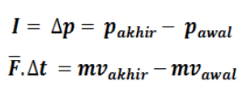

Momentum dalam fisika adalah kesukaran untuk memberhentikan gerak suatu benda. Momentum merupakan besaran vector, yang berarti memiliki nilai dan arah.
Dimana
p = momentum ( kg m/s)
m = massa benda (kg)
v = kecepatan benda ( m/s)
Impuls adalah hasil kali gaya impulsif rata-rata dengan selisih selang waktu (Δt). Impuls merupakan besaran vektor dan arahnya searah dengan arah gaya impuls F. secara matematis, impuls dirumuskan sebagai berikut:
Momentum dan impuls mempunyai suatu hubungan yang dikenal dengan nama teorema impuls-momentum. Bunyi teoremanya adalah “impuls yang dikerjakan pada suatu benda sama dengan perubahan momentum yang dialami benda tersebut, yaitu beda antara momentum akhir dengan momentum awalnya”.
Secara matematis, rumusan teorema impuls-momentum adalah sebagai berikut:
Hukum Kekekalan Momentum menyatakan bahwa “Momentum total dua buah benda sebelum bertumbukan adalah sama setelah bertumbukan”. Pernyataan ini mengisyaratkan bahwa nilai momentum total ketika benda bertumbukan adalah konstan atau tidak berubah
Contoh penerapan hukum kekekalan momentum adalah:
Momentum sistem kedua benda sebelum tubrukan dan setelah tubrukan pasti akan sama sesuai dengan hukum kekekalan momentum. Maka jika bertemu soal seperti ini dapat diselesaikan menggunakan hukum kekekalan momentum.